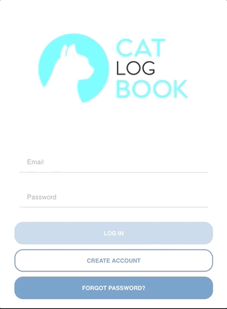
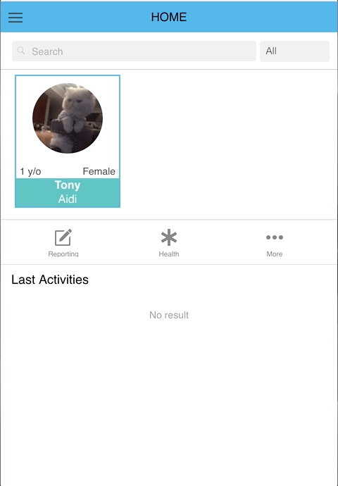

The catlogbook app allows you, as owners, to collect information regarding your cat’s activities and behaviour, socialisation and healthcare. By monitoring this data, you can assess your cat’s general wellbeing to ensure they experience the best possible quality of life. The application can be downloaded on iPhone or Android smart phone or tablet devices, and works best if you have push notifications switched on, on your chosen device. This enable the app to send pop-up reminders if you haven’t logged in for a few days. We recommend spending approximately 5 minutes every 1-2 days logging information on your cat and believe it is more beneficial to record trends rather than every activity or behaviour.
Creating an account
To set up an account via the catlogbook app click on Create account. Alternatively, go to catlogbook.com and click on the Register tab.
Enter a valid email address and password.
Check your email Inbox for a confirmation email from catlogbook.com. If you have not received a confirmation email, please ensure you check your Junk email box.
Click on the confirmation link in the email to active your account.
Log in to the catlogbook app using the nominated email and password.

Creating a profile for your cat
To create a profile for your cat click on the More tab, to the right-hand side of the screen and then select Add Cat from the pop-up menu at the bottom of your screen.
Fill out each information field. Fields with an asterisk are compulsory.
If your cat’s breed is not listed under the Breed information field, please select Unknown. It is possible to enter crossbreeds by including each breed as a percentage. For example, if your cat has one parent that is a crossing domestic cat and one that is a wild Asian Leopard Cat you enter each breed at 50%.
If you do not know your cat’s date of birth, simply enter 1st January of the estimated year.
After adding your cat, rate how much your cat enjoys each activity listed under Initial Activities Rating.

Reporting your cat’s activities, health and behaviours.
To add an activity, behaviour or a socialisation training session, select the relevant cat, then click on the Reporting tab to the left-hand side of the screen and then select Activity or Behaviourfrom the pop-up list at the bottom of your screen.
Fill out each field with the required information
Please note that when recording behaviours, some will fall under multiple categories. Select the category you feel best explains why your cat performed the behaviour.
To add health symptoms, preventative treatments (e.g. parasite control) or medication (e.g. tablets), select the relevant cat, then click on the Health tab and select what you wish to cat. You will be prompted after entering Treatments to set a scheduled reminder for future use, if you wish.
Permission to share with researchers/vets
After creating a profile for your cat and recording some activities or behaviours, you can choose to share this information with your veterinarian or behaviourist. To do so, log in to the dashboard section on catlogbook.com. This is also where you can review your data.
Click on Permissions to the left of the screen and enter your veterinarian’s/behaviourist’s email into the User information field.
Provide your feedback to developers.
Old users can give their user experience on good or bad ways. Developers can improve the app features according to the feedback. The "Contact us" button can be found at left side menu bar.
For any questions or if you’d like further information, please go to catlogbook.com